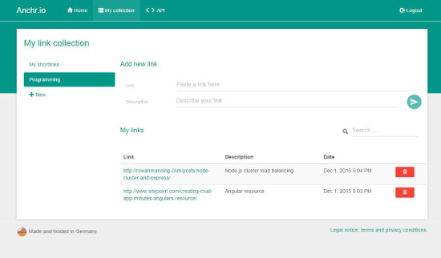

Anchr.io – Image uploads, bookmarks and shortlink service
I want to present my latest project called Anchr.io. It claims to be a useful little helper or toolbox or the like for common tasks on the internet. The idea arised when someday I considered it useful to have a collection of web links or bookmarks – like those you have in Chrome or Firefox – accessible from everywhere without needing to synchronize your browser profile. Just like if you’re anywhere on an other PC, find a useful article on the internet and want to save it quickly for later at home. This is what Anchr’s collections feature does. It saves links – with an optional description for easier search and separated into seperate categories / collections.

The second feature is to upload images. You can easily upload one or more photos from your computer oder mobile device and send them to friends or include them into forum posts or the like. Special with Anchr’s image hosting is that users are given the opportunity to client-sided encrypt images with a password. As a result no one without the password will ever see their photos’ content.

The last feature are shortlinks – actually not any different from those you know from goo.gl or bit.ly. They’re useful if you have a very long web link including many query parameters, access tokens, session ids, special characters and the like and want to share them. Often special characters break the linking or your chat application has a maximum length for hyperlinks. Or you just want to keep clarity in your document or emails. In this case it can be very helpful to make the links as short as any possible – to be precise of a length of 22 bytes with Anchr.
Anchr’s focus is on ease and quickness of use – short loading times, flat menu hierarchies, etc.
At the end just a few words about the technical aspect in addition. Anchr.io is separated clearly into backend and frontend or server- and client-application. Both are kept as modular as possible, trying to follow the MVC pattern. Interface between front- and backend is a REST API. The server is based in Node.js with a bunch of very cool new frameworks while the client is an Angular application. Concluding the development was both fun and such a good practice to me and the result will definitely make some of my daily processes a small little easier. I hope you give the app a try and leave me some feedback to dev(at)anchr.io.